Which of the following statements are true about the decision tree algorithm?
Decision trees are prone to overfit if the maximum depth is set too low.
Decision trees are prone to underfit if the maximum depth is set too low.
Decision trees are sensitive to small perturbations in the dataset and canresult in different tree structures.
Decision trees can handle both numerical and categorical features.
Q5MSQ4.5 marksselect all that apply
Which of the following statements is/are true regarding solution of Ridge regression problem?
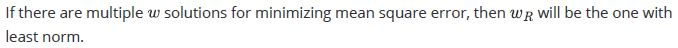
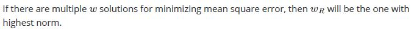
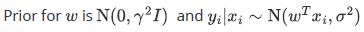
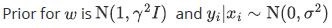
Q6SA4.5 marks
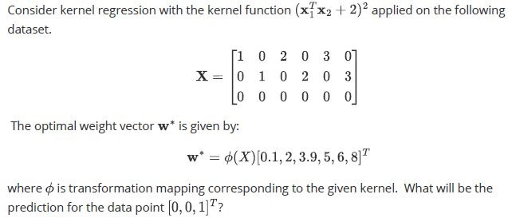
Q7SA4 marks
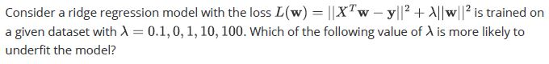
Q8SA4 marks
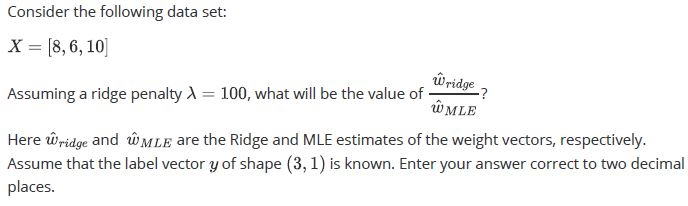
Q9SA2.5 marks
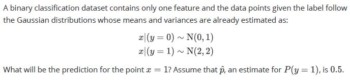
Comprehension passage - the questions below it refer to this
Consider a binary classification problem and a decision tree that is being trained to classify the points. In one of the internal nodes in this tree, 75% of the data-points belong to one of the two classes and the rest belong to the other class. You are not given the information about which class is more numerous in this node. Based on the above data, answer the given subquestions.
Q10MCQ1.5 marks
Do you have enough information to find the entropy of this node?
Yes
No
Q11SA3 marks
If the answer to the previous questions is "Yes", find the entropy of the node. Use log2 and enter your answer correct to three decimal places. If the answer to the previous question is "No", enter -1 as your answer.
Comprehension passage - the questions below it refer to this
Based on the above data, answer the given subquestions.
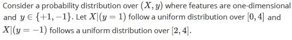
Q12SA2 marks
If p = P ( y = 1 ) is estimated to be 0.4, what will be the prediction for the point x = 3 using the Bayes classifier? Enter 1 or -1.
Q13MCQ2 marks
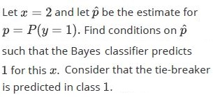
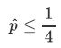
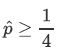
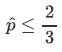
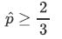
Q14SA2 marks
If p = P (y = 1) is estimated to be 0.5 using MLE on a given training dataset, what will be the training error of the Bayes classifier for this problem?
Comprehension passage - the questions below it refer to this
Based on the above data, answer the given subquestions.